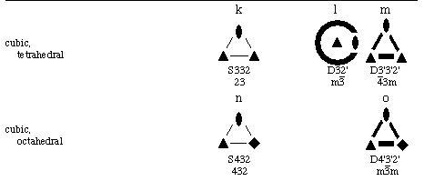

Crystallographic Topology 101
Crystallographic Topology 101

Orbifold Background
Some textbooks on geometric topology that we find useful include Barr (1964), McCarty (1967), Gross and Tucker (1987), Rolfsen (1990), Bredon (1993), and Novikov and Fomenko (1990). For more general mathematical topics, we use Ito (1987). The V-manifold of Satake (1956) provided the first formal definition of what was later renamed orbifold and popularized widely by William Thurston of Princeton University (currently at Berkeley). This concept was developed by Thurston into a major geometric topology discipline. Thurston's unpublished Princeton class notes of 1978 entitled "Three Dimensional Geometry and Topology", his expanded book manuscript of the same title (in preparation), and an article by Peter Scott (1983) constitute the main general references on orbifolds. Some additional interesting treatments of orbifolds are Davis and Morgan (1984), McCullough and Miller (1989), Haefliger and Salem (1990), Takeuchi (1991), and Borzellino (1992).
The first systematic study of crystallographic orbifolds was done by W. D. Dunbar (1981) in his Princeton dissertation carried out under Thurston, where he derived and illustrated the singular sets for the polar space groups using oriented orbifolds. The parts of his thesis related to the underlying hypersphere space S3 were published in Dunbar (1988). The second major contribution to crystallographic orbifolds was the systematic development of orbifolds (both oriented and nonoriented) in Seifert fibered space in Bonahon and Siebenmann's unpublished manuscript (1983). Part of that manuscript related to Euclidean 3-orbifolds, but omitting direct discussion of crystallography, was published in Bonahon and Siebenmann (1985). A book on "Classical Tesselations and Three-Manifolds" by Montesinos (1987) covers and expands certain aspects of Bonahon and Siebenmann's work. The fact that there are an infinite number of hyperbolic 3-orbifolds and only 230 Euclidean 3-orbifolds seems to make the hyperbolic orbifolds more attractive as a contemporary low-dimensional manifold topology research topic. Any similarities between the orbifolds of crystallography, which involve low-dimensional manifolds, and those of physics string theory, which approach infinite dimensionality, are purely coincidental mathematics.
A nomenclature system for 2-orbifolds was published by John H. Conway (1992) of Princeton. Conway and Thurston have an unpublished nomenclature system for noncubic 3-Euclidean orbifolds based on Seifert fibered spaces but have not documented it for general use. Conway is reported to be deriving a new nomenclature system for the crystallographic space groups. Many topologists and other mathematicians do not use the crystallographic space group nomenclature system. Interesting discussions of orbifolds and geometric topology in general are available on the Geometry Center's WWW pages.
Types of Crystallographic Orbifolds
Three types of groups are at the foundation of general crystallography: point groups, plane groups, and space groups. Their respective orbifolds are elliptic 2-orbifolds, Euclidean 2-orbifolds, and Euclidean 3-orbifolds. From this point on we will often call them point orbifolds, plane orbifolds, and space orbifolds, realizing that this nomenclature does not differentiate Euclidean from hyperbolic, but at present we see no direct crystallographic applications requiring hyperbolic orbifolds. Sects. 2.1 and 2.2 are concerned with the point and plane orbifolds, respectively, and how they relate to space orbifolds.
The relations of primary interest among the crystallographic groups are that space groups projected along their primary axes of symmetry become plane groups and that space groups "projected" along the space of all translations (i.e., all translations deleted) become point groups. Thus, all space groups have a parent point group, which is often used in classification schemes. However, point groups are also used to describe the symmetry of special positions within a space group and in that context are called Wyckoff site symmetries. Our main application of the point orbifolds is relative to the Wyckoff sites and their symmetries which, in the case of a space orbifold, become the components of its singular set. The singular set of an orbifold is the union of all the Wyckoff sites in an asymmetric unit (fundamental domain) of the space group's unit cell. The symmetry of each Wyckoff site is called the isometry of that site (i.e., the part of the symmetry group which returns a point on that site to itself). The multiplicity for a Wyckoff site is the number of sites with that specific isometry within the unit cell and is the ratio of the isometry of the site to the order of the space group modulo the unit cell translations. Remember that the order of a space group itself is infinite.
Orbifolding Mechanics
Point groups are simply discrete symmetries about a point, limited
crystallographically to the 2-, 3-, 4-, and 6-fold symmetries of cyclic,
dihedral, tetrahedral, and octahedral groups. The 2-fold symmetries
include mirror symmetry. Since it impossible to draw things on a
point, a sphere about the point is used instead, and the intersections
of the rotation axes and mirrors with the sphere are indicated in the
point group drawings. There are also three kinds of mirror-free
inversion centers symbolized , , and  , with the latter two having 2-
and 3-fold rotation axis subgroups, respectively.
, with the latter two having 2-
and 3-fold rotation axis subgroups, respectively.
Orbifold cone points are derived from a rotation axis that does not lie in a mirror, as illustrated in the top row of Fig 2.1. Orbifold corner points are derived from rotation axes that do lie in mirrors, as shown in the bottom half of Fig. 2.1. Orbifolding is simply the operation of wrapping, or folding in the case of mirrors, to superimpose all equivalent points. There are times when the orbifolding process itself is important, particularly when we are discussing covering spaces, since in that case we may need to unfold the orbifold partially to obtain some other orbifold or fully unfold it to obtain the original space (i.e., the universal cover). Covering orbifolds are related to the original orbifold as subgroups are related to groups. The universal cover of all Euclidean n-orbifolds is Euclidean n-space and that for elliptic n-orbifolds is the n-sphere.
Two topological surfaces, the 2-sphere and the 2-disk, are of fundamental importance and can be made by gluing cones or silvered edge disk fragments, respectively. A sphere may be constructed by gluing the non-silvered edges of two or more cones together, and a disk by gluing together the bases of two or more of the silvered edge disk fragments such as that shown in Fig 2.1. We can also cut a hole out of the interior of a disk (i.e., the part away from the silvered edge) and glue in a cone base. Often it is advantageous to simply cut out an entire fundamental domain (the asymmetric unit of crystallography) and fold it up to match all edges (2-D case) or faces (3-D case) and that is the operation we will follow below.
Deriving Point Group Orbifolds
There are seven main types of elliptic orbifolds, and we derive one orbifold of each type in Fig. 2.2. The thick dark lines in Fig. 2.2 denote mirrors; lighter lines the edges of various regions; solid black diads, and squares, 2- and 4-fold axes, respectively; a diad within an open square, a inversion axis with the inversion point in the center of the sphere; and the thick dashed circle, an antipodal boundary that rotates points 180o about the boundary of the orbifold and repeats. The diskal orbifolds, which form a silvered edge disk (symbol starts with D), are simple in that all we need to do is cut along the mirrors bounding the shaded area fundamental domain.
For the spherical orbifolds (symbol starts with S), it is graphically expedient to simply cut out the appropriate region of the point group spherical surface, and glue the matching edges of the region together to form a smaller closed surface, which is still topologically a sphere. The gluing is fairly obvious for S44 where we are just forming a football, but S422 requires some explanation. Since each n-fold cone point divides the local environment into n parts, we must cut along great circles through 2-axes and along mutually normal equatorial plane at the 4-axes. It does not matter how we choose the cut lines as long as we enclose a fundamental domain. Points along the cut edges leading away from the axes will be equivalent (by the symmetry of the axis) and are to be glued together. We simply leave some convenient envelope type flaps in Fig. 2.2 and then bring them together to form the 3-cornered pillow orbifold S422.
On the second set of point groups of Fig. 2.2, we first use the in-page mirror at the equator to bisect the sphere and form a hemisphere-shaped disk with silvered edge. We then mate the edges of the shaded 4-axis sector region and flatten the hemisphere to form a silvered edge disk with a 4-axis cone point.
In the middle figure we are looking down a axis which transforms point o -> x -> o -> x -> o with the o's on the northern hemisphere and the x's 90o away at the same latitude of the southern hemisphere. First we cut the sphere in half along the edge of the shaded area and close up the edges to form a new sphere with two cone points just as we would do for S22. This new sphere has an inversion center that equates diametrically opposite points which we must now eliminate. We can cut along any great circle and discard one hemisphere to factor out this spherical inversion. The new cut edge has an antipodal relationship with equivalent points 180o apart. The cone point can be anywhere within or upon the boundary; but, of course, if it is on the boundary, it appears twice, 180o apart. In Fig. 2.2 it is shown centered within the boundary, but this is not a requirement as it was for D4. RP2 is a real projective plane with a 2-axis cone point. Everything occurs in antipodal pairs along the gluing (identification) edge of a projective plane.
For the right hand figure of the second row, we first use the 2-fold axes of the top and center to cut the sphere in half vertically, then cut along the mirrors to obtain the shadded area. We then have to fold around the vertical 2-fold axis on the left edge of the cut area which joins the two mirror boundary components into a single continuous mirror boundary. The 2-fold axis of the remains, but the inversion part of the is inactive and can not generate an antipodal relationship because the left hemisphere is no longer present.
The 32 Point Group Orbifolds
Graphical representations illustrating the elliptic 2-orbifolds for the 32 crystallographic point groups are shown in Fig. 2.3 arranged as 7 columns of topological families and 8 rows of crystallographic families. The 7 columns are further partitioned into 15 group types designated by the symbols a,b,c for low cyclic; d,e,f for cyclic; g,h,i,j for dihedral; k,l,m for tetrahedral; and n,o for octahedral. This classification is patterned after that used by Bonahon and Siebenmann (1983). A tabulation of other names and notations for the series d-o is given by Conway (1992). Our "low cyclic" set a,b,c is not distinguished in the classification systems of others, and that row is not the usual one used in the crystallographic family tree; but these starter members in their series have special properties that will become apparent when we discuss subgroups and color groups in Appendix A. We omit the icosahedral rotation groups since their 5-fold rotation axes are not crystallographic.
Thick lines and circles in these orbifold drawings represent silvered
topological disks while thin lines and circles represent partioned regions
such as the edges
of 2-spheres. Dihedral corners are denoted by diads, triangles,
squares, and hexagons lying in a thick line or circle, while cone points
are denoted by the same symbols in a thin line or circle, or isolated within
the drawing. The thick dashed circle designates the projective plane
boundary, which has an antipodal relationship on the cone boundary about a
cone point (i.e. identical points occur 180o apart on the cone
boundary). To denote axes, diads and 3-, 4-, and 6-polygon symbols
are used instead of
numbers for consistency with standard crystallographic symmetry drawings.
An orbifold symbol is listed under each orbifold drawing with S, D, and RP
denoting sphere, silvered-edge disk, and real projective plane,
respectively. Mirrors are denoted by a prime attached to a digit with 2',
3', 4', and 6' representing dihedral corners lying in mirror intersections.
Cone points are given as 2, 3, 4, and 6. We did not use the Conway (1992)
orbifold notation, which, for example, separates cone and corner points by
an
asterisk (*), because we found it more convenient in later applications to
label all axes in mirrors with a prime (').
The bottom symbol under each orbifold drawing is the international short
crystallographic notation for the point group from which the orbifold is
derived, with overbars and m's denoting inversion centers and mirrors,
respectively, and with 2, 3, 4, and 6 describing the order of rotation
axes. Crystallographic point group symbols used in Fig. 2.3 are based on
group generators in a standardized geometrical setting with respect to the
coordinate system basis vectors and thus depend on which crystallographic
family (i.e., row) is involved. In the Wyckoff site symmetry tables of the
ITCr, permutation of the symbol components may be encountered due to the
setting of the point-group coordinate-system basis vectors relative to the
unit-cell basis vectors.
Elliptic 2-Orbifolds in Euclidean 3-Orbifold Singular Sets
What would a set of physical models for the 32 elliptic 2-orbifolds look
like in a specific application such as the representation of singular set
elements (i.e., special position Wyckoff sites of space groups) in
Euclidean 3-orbifolds? Although the names sphere, real projective plane,
and disk bring specific shapes to mind, we are using the terms
topologically and are free to distort those idealized shapes in any way we
please as long as we do not break connectivity within the surface.
Alternately, we can view everything in terms of points and note that we can
put together
any number of individual point orbifolds with
two cone point or two corner point orbifolds to form a
line of points (line segment), and any number of diskal orbifolds
to form a
2-D array of points (plane). The pieces with three edge connectors will
have to remain points. The orbifolds that have these characteristics are
The tetrahedral Euclidean 3-orbifold for NaCl shown in
Fig. 1.3 is redrawn
in Fig. 2.4 to portray how a mechanical draftsman might visualize the
singular set of the NaCl orbifold based on the physical shape of the Fm
The construction of singular sets (for
Euclidean 3-orbifolds) from elliptic 2-orbifolds might be considered as a
game of orbifold space dominoes. You can only position a piece next to another
piece with the same pattern on it.
Point regions (j,m,o) have
3 numbered
"snap" fasteners and zip lock areas between the snaps that can
zip lock with the edge of a sheet-like flexible
plane-region
silvered disk (c,f,i,l).
There are elongated flexible line regions (h) with a snap at
each end
and zip lock fasteners on each edge that have appropriately matching snaps
and disk edges. Other pieces (g,k,n,d)
have snaps but no zip-lock edges. There are
also some sheet-like plane regions (e,f) with snaps on their surfaces but
without zip edges. Finally, there are plane-region disks (i,l)
with 2-headed snaps on
their edges such that you can zip lock a line region piece around them and snap
lock both ends into the same 2-headed snap.
The sphere is the only 2-orbifold that is not used as a singular set
member. Instead, it represents the part of 3-dimensional space that
remains in the underlying topological space of the 3-orbifold after the
union of all the singular set elements is subtracted out. For the Fm
Page last revised: June 3, 1996

Figure 2.3. Elliptic 2-Orbifolds of the 32 Crystallographic Point Groups.
Point: Sx22 (g), Dx'2'2' (j), S332 (k), D3'3'2' (m), S432 (n), D4'3'2'
(o)
where x=2,3,4,6 and y=2,3.
Line of points: Sxx (d), Dx'x' (h)
Plane of points, some of which may be special points:
RP (b), D (c), RPy (e), Dx (f), D2y' (i), and D32' (l)
3-Space of points: S (a)
m asymmetric unit in Fig. 1.3 and the topological details
given in Fig. 2.3 for the component elliptic 2-orbifolds.
m orbifold in Fig. 2.4, we figuratively put a transparent
rubber balloon, S, inside the tetrahedron and fill it with "trivial
(i.e., identity operation only)
isometry group foam" from our pressurized foam spray can. The singular set
components each have an associated non-trivial isometry group with order
equal to the Wyckoff multiplicity. The rules of the game say that any two
touching elements have to have a group/normal-subgroup relationship that
will be discussed in Appendix A.
Figure 2.4. Fm3m Orbifold Representation.
 2.2. Euclidean 2-Orbifolds from Plane Groups
2.2. Euclidean 2-Orbifolds from Plane Groups
 Crystallographic Topology Home Page
Crystallographic Topology Home Page
 1. Overview
1. Overview